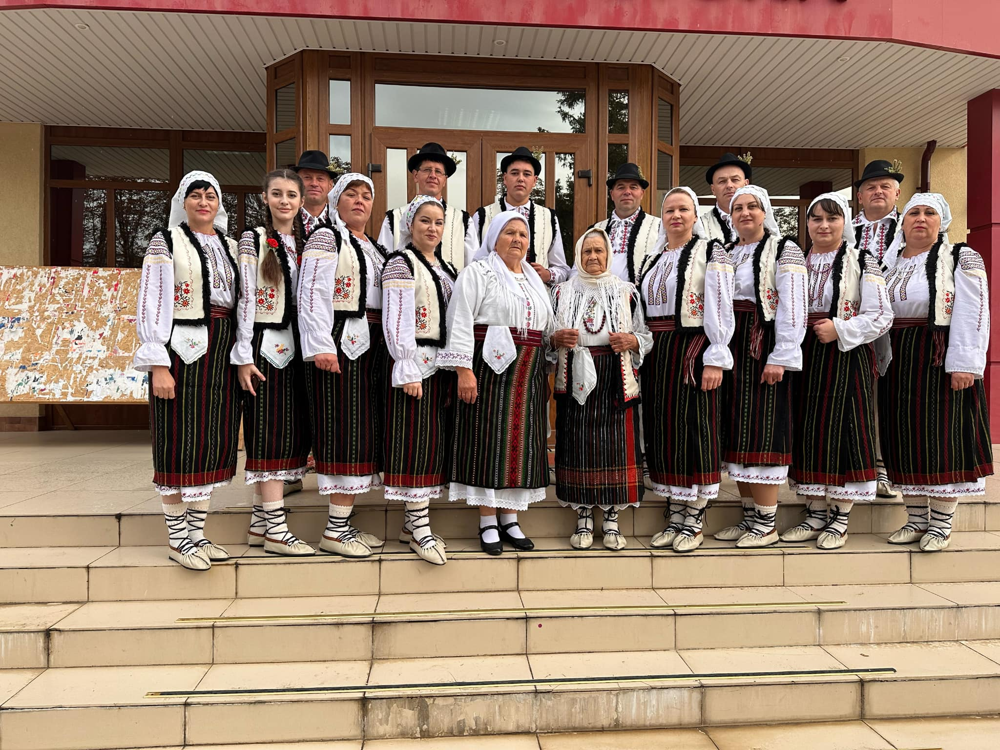

Despre Colicăuți
Colicăuți este satul de reședință al comunei cu același nume din raionul Briceni, Republica Moldova.
La o distanță de 224 km Nord de Chișinău se află o localitate pitorească, cu tradiții vechi, cu
gospodari harnici și ospitalieri, cu câmpuri mănoase și livezi roditoare- s.Colicăuți.
Așezarea geografică a satului și solurilor bogate în cernoziom, permit cultivarea cerealelor și
legumelor. Dragiștea și iazurile care scald malurile localității favorizează și segmentul piscicol, iar
livezile bine îngrijite duc faima satului în toată țara și peste hotarele ei. Satul Colicăuți a luat
naștere în nordul Basarabiei,la 7 km de la Briceni și la 19 km de la gara Văscăuți.
Colicăuți între istorie și legendă
Din spusele unor localnici, satul a luat naștere pe vremea lui Ștefan cel Mare. Domnitorul ar fi
repartizat răzeșilor câte o porțiune de pământ pe care aceștia trebuiau s-o apere de tatari. Printre ei
era Colicavschii despre care, se spune că ar fi înființat satul dându-I numele său. În documentele de
arhivă din 1636,1641, localitatea este întâlnită cu numele Culiceni. Alte documente îl atestă la 1670 cu
denumirea Calicăuți .
Abia la 3 iunie 1772 logofătul Lupu Balș confirmă într-un răvaș că a șasea parte din moșia Colicăuțului
îi aparține lui Ioan Cristea.
Primele case s-au construit pe malul râului Dragiște. Locuitorii se bucurau de o regiune de șes, de o
costisă de stâncă. Erau opt iazuri.
Primii locuitori erau din diferite regiuni, majoritatea fiind moldoveni. Despre aceasta ne vorbește
numele de familie ale locuitorilor.
Procesul de formare al satului a durat multe decenii, fiind înregistrat oficial abia în anul 1578.
Oameni iluștri ai satului Colicăuți
- Anatolie Casian- Doctor habilitat în științe fizico-matematice, profesor universitar. În anul 2004 a obținut titlul de Laureat al Premiului Național în domeniul Științei și Tehnicii. Este autor și coautor a peste 350 de publicații științifice și două monografii.
- Ala Popescu-juristă, a îndeplinit funcția de președinte al Curții de Conturi a Republicii Moldova între 16 decembrie 2004 și 21 aprilie 2011. Din 30 noiembrie 2018 este Membru al Plenului Consiliului Concurenței
- Adrian Lebedinschi- este un jurist și un om politic din Republica Moldova, care din octombrie 2015 până în iulie 2021 a fost deputat în Parlamentul Republicii Moldova
- Ilie Lupu- este a 24-a personalitate distinsă de universitatea bălțeană cu titlul de Doctor Honoris Causa. În 2008 i-a fost conferit Ordinul „Gloria Muncii”,iar în 2016 Ordinul Republicii.
- Victor Ladaniuc- scriitor, autorul cărții-Colicăuți, icoană de suflet. Premiat cu titlul om emerit al Republicii Moldova.
- Ion Bolduma- poet, publicist și jurist.
- Oxana Mardari-cântăreața de muzică populară și ușoară. Laureată a mai multor concursuri naționale și internaționale, profesoară de canto și vioară la Școala de arte ”Valeriu Poleacov”
Se spune că "unde joacă moldovenii, acolo pământul geme". Parafrazând această vorbă străveche, ași spune "unde joacă colicăuțenii, acolo pământul geme" și pe bune, nu aș da greș. În anul 1973 își începe activitatea Colectivul de dans popular "Izvoraș condus de Maria Rusnac. Colectivul de dans este format din 3 grupe- mare, mijlociu și mic. Printre dansurile specifice localității sunt-Sâta, Polca, Optul. În anul 2000 Colectivului de dans i se conferă Titlul onorific "Ansamblu Model". Participă la concursuri naționale:"La Vatra Horelor" și internaționale: "La Vorona", România.Vorbind despre evoluția culturii în satul nostru, nu putem trece cu vederea Formaţia folclorică „Cununiţa” condusă în prezent de Rusnac Viorel.
